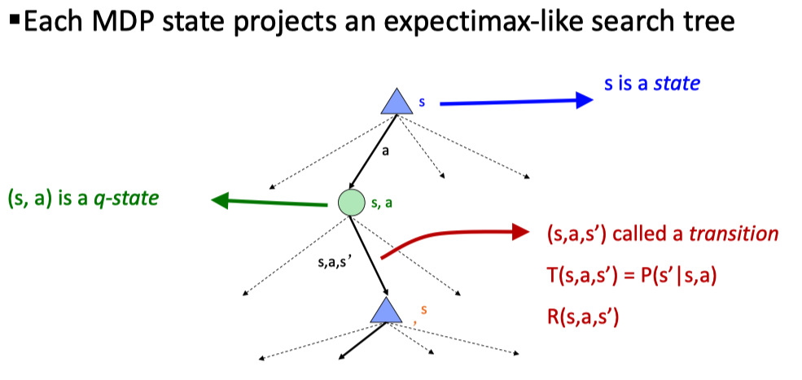
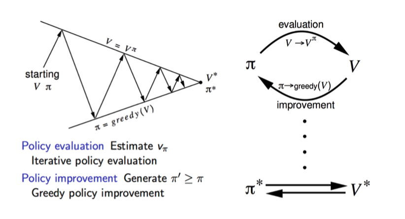

一个马尔可夫决策过程可由以下五元素定义：
State \(s\in S\)
Actions \(a\in A\)
Transition func \(T(s,a,s')=P(s'|s,a)\)
Reward func \(R(s,a,s')\)
Decay factor
其中，转移函数和奖励函数被称为 model，另外奖励也可能简化为 \(R(s,a)\) 或 \(R(s')\)的形式。
相较于之前的搜索策略（模型是没有随机性），在 MDP 中我们多了随机性。对于一个 MDP 问题来说，我们的目标是根据给定的 T 和 R（这里给定了 model，而在下面的 RL 中我们需要去学习这个模型）， 对于每个 state 寻找一个对应的 action，即给出一个 policy \(\pi*\) （从 state 到 action 的 mapping） 使得期望 utility(reward) 最大化。
由于是一个序列化的过程，我们需要对于这一系列的 reward 以一定的权重进行综合。对于一个必然会结束的问题来说，可以直接加总；但更多时候我们面临的是一个无穷的序列，我们可以定义 discounted utility \(U([r_0, 2_1,...])=r_0+\gamma r_1+\gamma^2 r_2...\) 以保障收敛。直观来理解，我们的 agent 更加偏好近期的收益，这也是符合我们的常识的。
另外，我们除了单个的 state，通常也可以将 \((s,a)\) 作为一个整体定义为 Q-state，具体的应用会在 MDP 和后面的 RL 中涉及。
应用随机节点，我们可以将 MDP 问题以搜索树的形式表达出来

Solving
显然，直接暴力搜索是不现实的，为求解 MDP 问题，先定义几个 Optimal quantities：
- Value of a state: \(V^*(s)=\) expected utility starting from \(s\) and actiong optimally
- Value of a Q-satte: \(Q^*(s,a)=\) expected utility starting out from \((s,a)\) and thereafter acting optimally
- The optimal policy: \(\pi^*(s)=\) optimal action from state \(s\)
显然，为了求解上述的问题，可以采用迭代的方法，有 Bellman Equation:
\[
\begin{align}
V^*(s) &= \max_{a\in A(s)}\sum_{s'}R(s,a,s')+ \gamma P(s'|s,a)V^*(s') \\
&=\max_{a\in A(s)}R(s,a,s')+\gamma Q^*(s,a)\\
\end{align}\\
\]
\[
Q^*(s,a)=\sum_{s'}P(s'|s,a)V^*(s')
\]
具体来说，我们可以采用以下的几种方法
Value Iteration
在值迭代中，我们只关系每个 state 的值，并基于最终得到的结果得到 policy。初始化每个 state 的值为 \(V_0(s)=0\) ，迭代更新
\[
V_{k+1}(s)\leftarrow\max_{a\in A(s)} R(s,a,s')+\gamma \sum_{s'}P(s'|s,a)V_k(s')\tag{1}
\]
每一步的时间复杂度为 \(O(S^2A)\) 。注意，在 value iteration 中，由于 Bellmen 方程的非线性（其中的 max 操作），我们只能迭代求解。有问题：
- 收敛速度慢
- 事实上，在一定的 \(V_k\) 下，最优策略很少发生改变。
补充最优策略的提取 Policy extraction:
\[
\pi^*=\arg\max_a\sum_{s'}P(s'|s,a)V^*(s')\\
\pi^*=\arg\max_a Q^*(s,a)
\]
从中也可以看到，把 Q-state 作为节点有着更好的性质。
Policy Iteration
对于 Value Iteration 的问题，我们在 Policy Iteration 进行了改进：交替更新 value 和 policy。
- Policy Evaulation：固定策略 \(\pi\)，计算 \(V^\pi(s)=R(s,a,s')+\gamma\sum_{s'}P(s'|s,a)V^\pi(s')\)
- Policy Improvement：即根据计算的 value 提取（更新）策略
另外注意到，在 evaluation 的过程中，我们没有了 max 操作，意味着现在变成了一个线性方程，理论上我们可以直接解这个线性方程 \(v = R+\gamma Pv\) 其中 P 为转移矩阵，但事实上矩阵求逆的时间复杂度为 \(O(S^3)\) ，所以一般我们仍会采用（1）中的迭代过程，执行固定的次数过程达到一定的精度。
比较两种算法，其实它们都是 Dynamic Programming，而且本质上都是一样的：只是，在 value iteration 中，我们关注的重点是在 state 的 value 上，对于每一步 iteration，我们同时更新 value 和 policy （policy 的更新是隐式的，即我们所取的 max）；在 policy iteration 中，每次迭代我们先固定一个 policy，在这个固定的策略下更新 value，即对于 value iteration 中 policy 在后期不怎么会变化的问题进行了改进。
一个清晰的表示：
